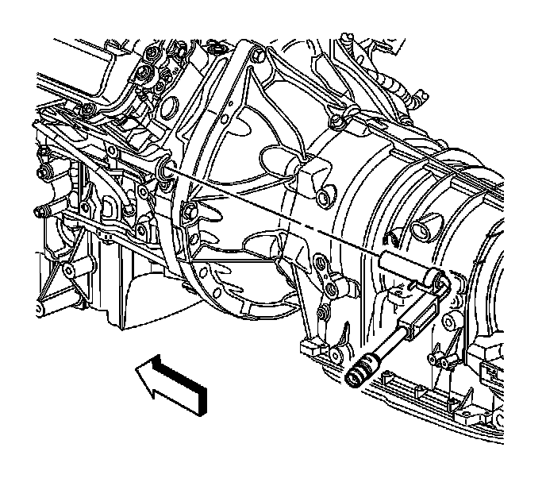

Coolant Heater Replacement (220V)
Coolant Heater Replacement (LH2, KA3)
Removal Procedure

1. Raise and support the vehicle. Refer to Lifting and Jacking the Vehicle (Service and Repair) .
2. Disconnect the coolant heater power supply cord from the coolant heater.
3. Complete the following in order to remove the coolant heater from the engine block:
1. Pry outward on the retaining clip.
2. Pull the coolant heater from the engine block.
Installation Procedure
1. Install the coolant heater into the engine block until the retaining clip is fully engaged.
2. Connect the coolant heater power cord to the coolant heater.
3. Lower the vehicle.